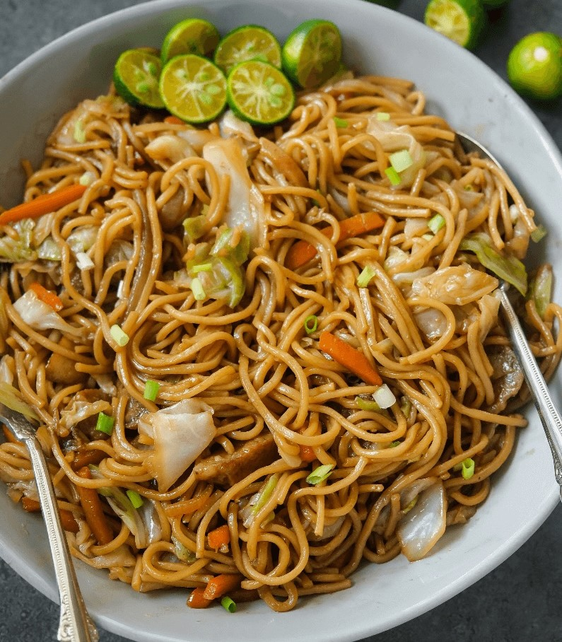
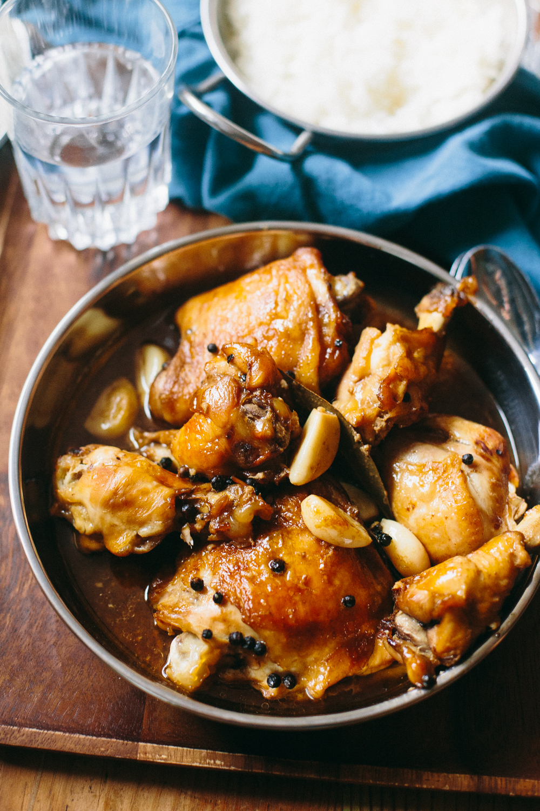

Belarusian Cuisine
Sirniki
Sirniki are often described as cheese pancakes, which, to my mind, gives a false impression of them being doughy, and they are most certainly not. Sirniki might resemble pancakes in shape, but taste a lot more like a warm cheesecake than an actual pancake.
They are perfect when served hot off the pan with sour cream and jam for breakfast.
Borscht

Borscht is a beet soup that's warm, sweet, and sour all in one bowl. It has the umami and complexity of a well-developed chicken soup but the beets add a whole different flavor profile.
Its sweetness comes from the beets, onions, and cabbage, and its tartness from tomatoes and vinegar. Some meat can be added for richness. For a better borscht experience, many people enjoy adding sour cream, yogurt, or fresh herbs.
It's warm, sweet, full of umami, and sour all in one bowl. Perfect for winter!
Kulaga

Kulaga is an almost forgotten, but very tasty and healthy Belarusian dish. It's a jam-like dessert made from berries, honey, and wheat flour — excellent and simple. Kulaga is tasty, healthy, and can help soothing a cold.
Filipino Cuisine
Pork Sinigang
Traditionally eaten on cold rainy days to bring a sense of comfort and serenity. Made with pork, string beans and taro. Sinigang is a soup like dish that is traditionally eaten with rice. It is savory, and a little sour. It has a powerful, poignant smell that makes it easy for us Filipinos to recognize.
Pancit Canton
Noodle dish perfect for sharing in large groups. Pancit can be enjoyed in a variety of ways. It can be made with pork, shrimp, and chicken. It is stir fried with oyster sauce, chicken broth, soy cauce, and vegetables to make a party of flavours in your mouth. Perfect for introducing Filipino cuisine to anyone who is unfamiliar.
Chicken Adobo
The most iconic Filipino dish out there that implements all the flavours of the Philippines. It can be made with pork or chicken, and is boiled together with fish sauce, peppercorn, and bay leaves to make a flavorful broth. Goes perfect with rice.
Indian Cuisine
Plain Dosa
Dosa is a popular traditional dish made with fermented rice. It's usually crispy and thin and has filling inside. Generally, dosas served rolled or folded and eaten with hands.
Pav Bhaji
Pav Bhaji is a popular Indian street food, mostly in Mumbai. The vegetable curry consists blends of various different vegetables and spices, and served hot with thick soft butterd bread known as pav.
Vegetable Pulav
Vegetable Pulav is a rice dish made by cooking rice and vegetables in broth along with traditional Indian spices. It's popular throughout the world and especially among the vegetarian people in India.